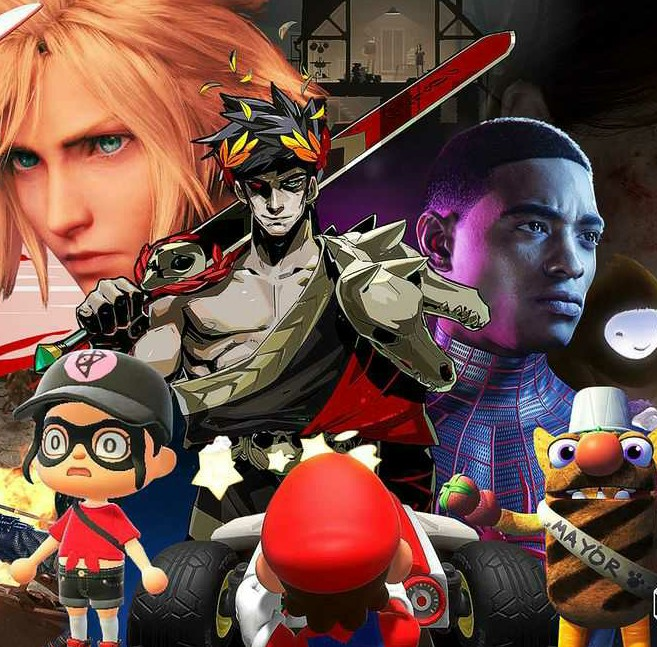

League of Brain - Jak gry działają na m000sk
Gry, powszechnie znany synonim marnotractwa czasu. Czy aby na pewno? Wyobraź sobie, że NIE ZAWSZE. Pierwsza gra komputerowa powstała ok. 50 lat temu, jednakże od kiedy gry istnieją nie obserwuje się spadku inteligencji wśród ogółu ludności. Dlaczego?